Relative Configuration
The actual three-dimensional arrangement of groups arounf a chirality center is called the absolute configuration. Until a special X-ray technique was developed in 1951, it was impossible to determine the absolute (or both) of a multitude of compounds were available, no experimental method existed to determine wheter that enantiomer har the R or the S absolute configuration. This was not a major problem for organic chemists, though, because they were able to convert one chiral molecule to another, using reaction whose stereochimical effects were well known. Thus, it was possible to relate the configuration of one compound to that of another. The relative configuration of the compounds were know. For example, if one enantiomer of 2-butanol is converted to 2-clorobutane using a reaction that is known to put the chlorine exactly where the hydroxy group was, then the two compounds have the same relative configuration. If, as shown here, the starting material is (R)-2-butanol, then the product is (R)-2-chlorobutane:
| (R)-2-Butanol | ⟶ | (R)-2-Chlorobutane |
If the starting absolute configuration of the starting 2-butanol enantiomer is not known, then the absolute configuration of the product 2-chlorobutane is not known either. However, because the reaction is known to put the chlorine exactly where the hydroxy group was, the two compounds must have the same relative configuration. Often, knowing the relative configurations of the compounds is enough to answer the chemical question under consideration, the absolute configuration of any other compound whose configuration has been related to the first is also known.